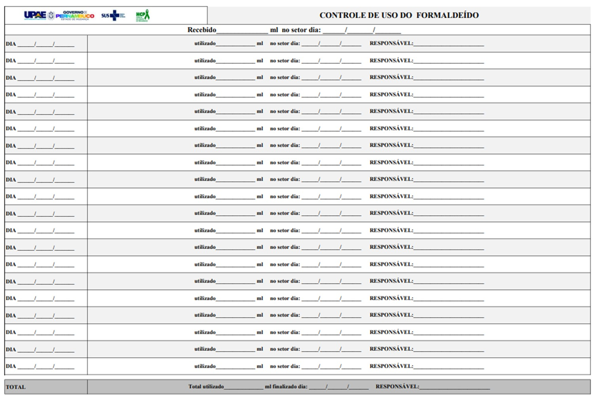

UPAE CARUARU - MINISTRO FERNANDO LYRA
Desempenho Mensal - Executado vs Meta
Comparativo de Consultas Multidisciplinares e Sessões de Reabilitação | Janeiro - Novembro 2025
Consultas Multidisciplinares
Sessões de Reabilitação
Consultas - Média Mensal
114,4%
Meta superada
Reabilitação - Média Mensal
103,9%
Meta superada
Melhor Mês - Consultas
130,6%
Abril 2025
Melhor Mês - Reabilitação
144,3%
Abril 2025
Altas/Inclusões
Altas das Sessões
Inclusões no projeto de Glaucoma
Altas das Sessões
- ✓ 352 altas realizadas no período (ago-nov)
- ✓ Psicologia lidera com 202 altas (57% do total)
- ✓ Crescimento em Fonoaudiologia com destaque em novembro (20 altas)
- ✓ Fisioterapia manteve volume estável (~22 altas/mês)
Projeto Glaucoma
- ✓ 135 inclusões no período (ago-nov)
- ✓ Pico em setembro com 59 inclusões
- ✓ Redução gradual após setembro (20 em out, 15 em nov)
- ✓ Média de ~34 inclusões/mês no período
Nutrição
Gastos com Almoço
Desperdiçometro
Nutrição Insumos
AÇÕES DA NUTRIÇÃO
| Ação | Descrição |
|---|---|
| Campanha do Desperdício | Novembro inicio da campanha do desperdicio. Inicio dia 06/11 |
| Redução da Quantidade de Almoço | Redução da quantidade de almoço solicitada, cinfirmando as quantidades alguns dias antes. |
| Oferecimento de Marmitas | Oferecimento de marmitas aos colaboradores. Total de Novembro 81 marmitas. |
| Mudança do Sistema de Registro | Mudança do sistema de registro do almoço. Em processo de desenvolvimento pela TI |
Radiologia
Radiologia Insumos
ANDAMENTO DA RADIOLOGIA
| Ação | Descrição |
|---|---|
| Limpeza dos Cassetes | Processo de limpeza dos cassetes de raio-X para melhorar a qualidade das imagens obtidas. |
| PACS | Inicio dos testes com a empresa e a TI Local- Problemas apresentados no equipamento de densitometria e USG |
Farmácia
Custos Médios da Farmácia
Custo Total
R$ 103.245,17
Projetos e Insumos Assistenciais
Maior Custo
R$ 66.260,35
Projeto Bexiga Neurogênica
Análise de Saídas
| Novembro de 2025
TOP 5 - Itens por Quantidade Movimentada
| Posição | Código | Descrição | Quantidade Total | Valor Total |
|---|---|---|---|---|
| 1º | 353 | LUVA PARA PROCEDIMENTO NÃO ESTERIL TAMANHO M | 5.957 | R$ 1.119,03 |
| 2º | 249 | CAMPO OPERATORIO COM CADARCO 25X28CM C/S | 963 | R$ 4.928,29 |
| 3º | 251 | COMPRESSA CIRURGICA DE GAZE HIDROFILA ESTERIL 7,5X7,5CM 11 F | 900 | R$ 395,61 |
| 4º | 371 | SERINGA DESCARTÁVEL 10ML S/ AGULHA (BICO OU ROSCA) | 871 | R$ 210,89 |
| 5º | 3465 | AGULHA HIPODERMICA 0,7X25MM 22G 1 C/ DISP. DE SEGURANÇA | 830 | R$ 239,40 |
TOP 5 - Itens por Valor Total Gasto
| Posição | Código | Descrição | Quantidade Total | Valor Total |
|---|---|---|---|---|
| 1º | 2909 | CATETER URINARIO REVEST HIDROFILICO LUBRIF STANDARD MASC CH10 | 1.530 | R$ 20.151,92 |
| 2º | 2578 | BOLSA P/ COLOSTOMIA DRENAVEL TRANSP 1PEÇA RECORTAVEL 10-76MM | 264 | R$ 5.037,12 |
| 3º | 2910 | CATETER URINARIO REVEST HIDROFILICO LUBRIF STANDARD FEM CH10 | 240 | R$ 3.160,12 |
| 4º | 2911 | CATETER URINARIO REVEST HIDROFILICO LUBRIF STANDARD MASC CH12 | 210 | R$ 2.751,10 |
| 5º | 2784 | BOLSA COLOSTOMIA DRENAVEL TRANSP. RECORT.1 PEÇA MAXI 10-80MM | 111 | R$ 2.874,91 |
Item Mais Usado
5.957 unidades
Luvas de procedimento não estéril tamanho M
Item de Maior Custo
R$ 20.151,92
Cateter urinário revest hidrofílico lubrif standard masc CH10
Custo Unitário mais alto
R$ 25,90
Bolsa colostomia drenavel transp. recort.1 peça maxi 10-80mm
Análise de Produtos
Empréstimos Concedidos, Baixas por Validade e Estoque Parado | Janeiro - Novembro 2025
Baixa por Validade
| Mês | Valor | Descrição |
|---|---|---|
| Janeiro | R$ 2.004,30 | Lenta intraocular, HIDROGEL e NEOCAÍNA |
| Fevereiro | R$ 1.558,22 | Lenta intraocular e bisturi ocular |
| Março | R$ 781,54 | SULFATO DE MAGNESIO e LUVA CIRURGICA COM PÓ n°8 |
| Abril | R$ 0,00 | - |
| Maio | R$ 367,46 | Lenta intraocular, ESCOVA/ESPONJA SECA e TRAMADOL |
| Junho | R$ 0,00 | - |
| Julho | R$ 31,29 | CATETER NASAL P/OXIGENIO e FENILEFRINA 10% |
| Agosto | R$ 439,74 | Lenta intraocular e ACIDO ACETICO 5% |
| Setembro | R$ 506,01 | LENTE INTRAOCULAR DOBRAVEL, ACIDO ACETILSALICILICO INFANTIL, FLUORESCEINA 1% COLIRIO |
| Outubro | R$ 755,84 | LENTE INTRAOCULAR DOBRAVEL E RIGIDA, DIAZEPAM 5 MG/ML - 2ML E TRAMADOL, CLOR. 50MG/ML, Bolsa de Ostomia |
| Novembro | R$ 529,01 | LENTE INTRAOCULAR DOBRAVEL, CLOPIDOGREL 75MG |
Total Baixas por Validade
R$ 6.973,81
Janeiro - Novembro
Análise do Inventário
| Análise do Inventário | |
|---|---|
| O que deu certo | Bipagem, contagem semanal, controle de lotes com verificação de 2 fatores, organização dos carros de paradas com itens do mesmo lote |
| O que precisamos melhorar | Endereçamento dos itens, organizar melhor o dia anterior, melhor comunicação com a enfermagem para checagem dos carrinhos de parada |
Empréstimos
EMPRÉSTIMOS CONCEDIDOS
| Fornecedor | Valor Total |
|---|---|
| UPAE BELO JARDIM | R$ 10.044,37 |
| UPAE ARCOVERDE | R$ 4.595,58 |
| UNIMED CARUARU | R$ 1.759,87 |
| FUNDO MUNICIPAL DE SAÚDE | R$ 96,55 |
| HOSPITAL DA MULHER DO AGRESTE | R$ 65,88 |
| HOSPITAL DO TRICENTENÁRIO | R$ 105,40 |
| INSTITUTO DE MEDICINA INTEGRAL | R$ 2.666,43 |
| UNIDADE DE UROLOGIA DO AGRESTE | R$ 207,75 |
| HSS - SOCIEDADE PERNAMBUCANA | R$ 462,22 |
| HOSPITAL MEMORIAL SÃO GABRIEL | R$ 856,55 |
| HOSPITAL REGIONAL DO AGRESTE | R$ 103,71 |
| TOTAL GERAL CONCEDIDO: | R$ 20.964,31 |
EMPRÉSTIMOS RECEBIDOS
| Fornecedor | Valor Total |
|---|---|
| HOSPITAL MEMORIAL ALZIRA RIBEIRO | R$ 2.060,55 |
| HOSPITAL REGIONAL DO AGRESTE | R$ 2.176,67 |
| HMR - SOCIEDADE PERNAMBUCANA | R$ 1.506,04 |
| HOSPITAL MEMORIAL SÃO GABRIEL | R$ 354,94 |
| UNIMED CARUARU | R$ 420,40 |
| HSS - SOCIEDADE PERNAMBUCANA | R$ 119,12 |
| UPAE ARRUDA | R$ 13,56 |
| UPAE BELO JARDIM | R$ 983,19 |
| TOTAL GERAL RECEBIDO: | R$ 7.634,47 |
Total Concedido
R$ 20.964,31
Total Recebido
R$ 7.634,47
Saldo Líquido
- R$ 13.329,84
Concedido - Recebido
Neuropediatria
Fonoaudiologia
Fono exames
Terapia Ocupacional
Ação
| Ação | Descrição |
|---|---|
| Neuropediatra | Adequação da Sala Multidisciplinar em fases finais |
| Neuropediatra | Ajuste do local de espera das crianças coma manutenção e a TI |
| Neuropediatra | Possibilidade de voluntários para recreação com as crianças (o HCP tem alguma ação para isso?) |
| Altas | Outubro 20 / Novembro 5 |
Projeto Neurodivergentes
Cronogramas e Atividades
Ações
| Ações Futuras | STATUS |
|---|---|
| Padronização da chamada da TI | Não conseguimos fixar a chamada pois a versão é diferente, não consguimos implantar na UPAE Caruaru |
| Emenda | Lentes de catarata e Hemoclip |
| Endereçamento Farmacia e Almoxarifado | jan.-26 |
| OCI | Realizamos 18 OCI's e 10 já foram concluidas. |
| FISPQ | A Segurança do Trabalho está entrando em contato com as empresas para solicitar a informação. Caso não obtenha retorno, o item será definido como pré-requisito para o fornecimento. |
| Fracionamento | Controle do fracionamento dos inflamáveis no setor |
AÇÕES PARA 2026
| AÇÕES PARA 2026 | AÇÃO | |||||||||||
|---|---|---|---|---|---|---|---|---|---|---|---|---|
| + | Janeiro Branco | Bingo do autocuidado dia 20/01 | ||||||||||
|
||||||||||||
| + | Fevereiro – Carnaval / Prevenção de Acidentes | Ações de prevenção no dia 10/02 mas durante o mês também poderão ser abordadas outras temáticas: Alzheimer, Fibromialgia e Lúpus. | ||||||||||
|
||||||||||||
| + | Março Azul-Marinho | Ações de prevenção no dia 17/03 e mutirão de colonoscopia | ||||||||||
|
||||||||||||
| + | Abril – Mês de Alusão ao TEA | Ações em alusão ao TEA para os pacientes dia 14/04 e para colaboradores 24/04 | ||||||||||
|
||||||||||||

HCP